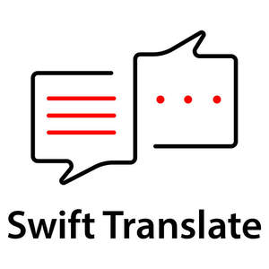

Trade Mark Journal No.2025/019 9 May 2025
UK00004181843 31 March 2025 (9,16,35,38,41,42,45)

- Class 9
- Computer software; downloadable mobile applications; application software; educational software; virtual classroom software; computer software for language translation and interpretation; computer software for use in the management of language translation; computer software for online and mobile translation platforms; recorded computer programs; audiovisual data carriers; apparatus for recording, transmission or reproduction of sound or images; data processing equipment and computers; all of the aforementioned goods only in relation to language translation.
- Class 16
- Printed matter; printed publications; brochures; manuals; leaflets; newsletters; booklets; business cards; books; magazines; periodicals; reports; instructional and teaching materials; stationery; publications; all relating to language translation, interpretation, and multilingual communication.
- Class 35
- Transcription services; administrative support services relating to multilingual communication; consultancy in linguistic adaptation for corporate branding and marketing; Advertising; marketing and promotional services; business management; business administration; office functions; consultancy, advisory and information services relating to all the aforesaid services.
- Class 38
- Providing multilingual communication services via telecommunications networks; telecommunications services; communications by computer terminals; cellular telephone communication; computer-aided transmission of messages and images; television and radio broadcasting; electronic mail services; electronic bulletin board services; provision of telecommunication facilities for educational purposes; provision of online communication services; provision of on-line forums; providing telecommunications connections and user access to global computer networks and databases; transmission of digital content and multimedia via online platforms and mobile applications; information, consultancy and advisory services relating to all the aforementioned services; all of the aforementioned services only in relation to an online platform for translations.
- Class 41
- Translation and interpretation services; language teaching services; education and training services in the field of language, translation and interpreting; provision of online tutorials, workshops, seminars and courses relating to translation, software, and multilingual communication; subtitling and dubbing services; editing and publication of texts (excluding publicity texts); provision of non-downloadable electronic publications and digital content relating to language and translation; layout and desktop publishing services (excluding advertising); computer-aided translation training; organisation of competitions for educational purposes; provision of translation and interpreting workshops for university students; consultancy, advisory and information services relating to the aforesaid; Translation and interpretation services for business purposes; business document translation; Language interpretation over telephone, video, and online platforms; real-time translation and interpreting via voice, video, and messaging technologies; Certified translation services; sworn translation services; legal document translation; preparation and translation of official, governmental, or immigration-related documents; notarised translation services; interpreting services for legal proceedings; provision of linguistic support in legal, regulatory, and administrative contexts.
- Class 42
- Design and development of computer software for language translation and interpretation; programming of computer software for electronic language translation dictionaries and databases; provision of temporary use of online, non-downloadable software for language translation; platform as a service (PaaS) featuring software for multilingual communication; hosting of online platforms and web facilities for language and translation services; cloud computing services in the field of language translation; development and programming of software for virtual classrooms; creation and maintenance of websites for others; graphic arts design; data conversion from physical to electronic media; web site design consultancy; provision of IT consultancy and information technology support services relating to the above.
- Class 45
- Consultancy and advisory services in the field of legal language and multilingual compliance.
VIPLAND Ltd